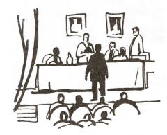
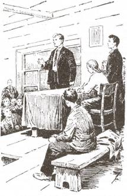

|
Парторг как литературный герой Дарья Земскова В произведениях соцреализма, как правило, представлен тот мир, который должен быть, а не тот, который есть. Это литература и мечты, и определённо поставленной цели. Главным генератором мечты и цели была Коммунистическая Партия Советского Союза. Заботы партии находили прямое отражение в сюжетах литературы: выпуск высокосортной стали («Сталь и шлак» В. Попова), добыча нефти («Больно берег крут» К. Лагунова) и угля («Труд» А. Авдеенко), строительство металлургических комбинатов («В Сибирской дальней стороне» Н. Чертовой, «Миша Курбатов» И. Макарова), выпуск сельскохозяйственной техники («Битва в пути» Г. Николаевой, «Сердца беспокойные» Н. Сизова), строительство гидроэлектростанций («На большой реке» А. Югова, «У горы непокорной» Ю. Лаптева, «Далеко в стране Иркутской» Ф. Таурина), развитие сети «транспортных артерий» («Магистраль» А. Карцева), внедрение новой техники («Искатели» Д. Гранина, «Ударная сила» Н. Горбачёва) и технологий («Иначе жить не стоит» В. Кетлинской), освоение целинных земель («Целинники» Р. Лихачёвой) и даже строительство новых городов («Мужество» В. Кетлинской). Непосредственным воплощением руководящей и направляющей роли КПСС в идеологической, производственной и бытовой сферах были заняты парторги, каждый на своем месте: от генерального секретаря до партийного руководителя производственной бригады, отдела научно-исследовательского института, театральной труппы и проч.Посмотрим, как парторг осуществляет свои функции на страницах произведений литературы соцреализма. Герой романа А. Карцева «Магистраль», начальник политотдела Платон Гветадзе, непрерывно ездит по участкам строительства железной дороги. Автор, конечно, объясняет цель каждой поездки, но если их сложить воедино, то получится довольно жалкая картина: функции парторга заключаются лишь в том, чтобы собрать и записать прорехи стройки и пожаловаться начальнику строительства. Показательно, что «труды» Гветадзе по собиранию «болячек стройки» «полетели прахом»: на совещании его не стали слушать. В обязанности парторга входит и обеспечение бытового порядка трудящихся, но автор показывает эту сторону его работы слишком упрощённо: получается, что на плечи парторга часто ложатся чужие обязанности. «Снабжение организовали?... Надо съездить посмотреть, как они там устраиваются…» – озабочен парторг, хотя для этой цели на стройках всегда существует начальник снабжения. Он следит «за спешным оборудованием новой столовой, за всем бытовым устройством», он привозит в барак патефон. Парторг берёт на себя и функции начальника участка: снимает с одного участка рабочих, чтобы ликвидировать невыполнение плана на другом. Создаётся впечатление, что на строительстве нет ни главного инженера, ни начальника, и поэтому их замещает политработник. Загадочна фигура парторга, он вездесущ… Автор как будто не знает, чем занять героя, призванного быть значимой фигурой в произведении, и получается, что за неимением собственных дел парторг делает всё, но именно поэтому не делает ничего. Может быть, писатель неясно чувствовал, что образ парторга выглядит неубедительно, наделяя его помимо заботливой рассудительности ещё и беспокойным движением, порой весьма суетливым. Всё это достаточно неопределённо, зато налицо невероятная занятость парторга, вызывающая и у него самого ощущение какой-то неполноценности: «…Произношу речи на собраниях, навещаю сразу целые бригады и артели на трассе во время работы, на отдыхе в бараках… П о р а д е л о д е л а т ь! » (разрядка автора, курсив мой – Д.З.). Так и хочется добавить: наконец-то парторга посетила здравая мысль! Но дел, кроме суеты – нет.Разъездами занят и парторг Залкинд («Далеко от Москвы» В. Ажаева). «Пойдём, походим по участку» – любимый призыв Залкинда. Общая для многих романов схема, представляющая работу парторга, имеет сюжетные разновидности. Так, если парторг Гветадзе, объезжая участки, как-то устраивает быт, то обычное дело парторга Залкинда – проводить беседы. В шутку он так говорит о своих обязанностях: «Моё дело и того проще… с людьми разговоры разговаривать, развлекать их понемножку, чтоб не скучали». Но в ходе повествования выясняется, что это вовсе не шутка: не «развлекать», а отвлекать от работы будет парторг людей на протяжении всей книги. Однажды он устраивает приём рабочих: вызывает их по разным вопросам прямо со стройки (здесь вспоминаются слова другого литературного героя – Гветадзе: «навещаю… целые бригады… во время работы»). Инженеру Ковшову он выговаривает за то, что тот не отпустил на партийную учёбу одного из рабочих, хотя знает, что «на проливе разворот работ» и рабочие нужны как никогда. Парторг мешает работать! Парторг Морозов в романе «Мужество» В. Кетлинской собирает комсомольцев на заседание, чтобы рассказать им о предстоящем строительстве города на Амуре. «Комсомольцы ждали первых общих слов», говорит (точнее проговаривается) Кетлинская. В итоге парторг «так и не сказал о стройке ничего конкретного», это сделал начальник строительства.Писатели стремятся показать активность, неутомимость, трудовое рвение парторгов, но делают это неумело. Самое распространенное средство для демонстрации добросовестности героев, их искренности в работе – споры и ругань. «Приехал Батманов, поговорил с людьми, выругал…» («Далеко от Москвы» В. Ажаева); «…ругались, обижались друг на друга и никаких особых подходов не искали» («Искатели» Д. Гранина) и т.д. и т.п.  Выходит, что парторги на заводах и стройках – бездельники и трескуны. Но мог ли такой парторг стать образцом для подражания? И с ужасом следует признать – мог!Здесь-то и начинается настоящая советская мифология. О мифологии соцреализма написано много1. Если, например, с точки зрения К. Кларк, главной функцией соцреализма было «создание официального хранилища государственных мифов»2, то, по мнению Е.Б. Скороспеловой, советская литература не создавала миф по партийной указке, миф появился, поскольку в нём нуждалось сознание советского человека. Мифология соцреализма – не столько следствие политического предписания, сколько естественное явление литературного развития. Если прочие мифологии рассказывают о прошлом, то мифология соцреализма направлена в будущее. Основная категория мифа – мифическое время. И в любой мифологии это правремя, время первотворения, первопредков, «золотой век» – всегда в прошлом, в соцреализме же он – в будущем. Литература соцреализма не считается со временем в том смысле, что не было, например, такого парторга, но она пишет – был! Это и есть её внутренний конфликт с современностью. На переломе этого конфликта и возникает миф. Литература чуть забегает вперёд, даёт небольшое приращение времени. Она пытается вместить это приращение в рамки современности. Мифическое приращение времени составляет основу и эстетическую ценность соцреализма. Литература приращения времени (условно назовём её так) была декларирована на съездах, утверждалась в критике, литературоведении, в учебных программах, так как это было продиктовано советской идеологией – идеологией устремлённости в будущее всех. Одним из двигателей устремлённости вперёд провозглашалась взаимопомощь. Литература ненамеренно чуть-чуть опередила это движение. В ней отозвался идеологический импульс, настолько сильный, направленный по вектору всего общества и поддержанный обществом, что она ушла немного вперёд. Е.Б. Скороспелова пишет о пересоздании соцреализмом действительности3, точнее же будет сказать о том, что он её достраивал.Парторг (политработник, комиссар) или комсорг (для романа, где на первом плане комсомол) – фигура в каноническом соцреалистическом романе обязательная. Задачи парторга – «советовать, наставлять, учить» («Корни и крона» В. Кожевникова). Он ведёт идеологическую работу. Он поднимает силу духа, направляет заблудшего, просветляет отчаявшегося. Он ведёт за собой бойцов, если погиб командир. Он разъясняет линию партии. Конкретны задачи заводского парторга – «обучать не столько умению обращаться с техникой, сколько уважению к этой самой технике и даже больше того – благоговейной любви к ней» («Корни и крона» В. Кожевникова). Парторг часто даже в чисто технических вопросах смотрит зорче директоров или инженеров: «Лугового беспокоило то, что руководство завода как-то скептически отнеслось к идее широкого внедрения на заводе точного литья. А ему казалось, что в этом, именно в этом, выход» («Сердца беспокойные» Н. Сизова). Словом, парторг – это духовный наставник. Парторг - второй важный персонаж в производственном романе после начальника строительства или директора завода. Как правило, именно с этими двумя героями знакомится читатель уже на первых страницах («Далеко от Москвы» В. Ажаева, «Сталь и шлак» В. Попова, «Секретарь обкома» В. Кочетова, «Сердца беспокойные» Н. Сизова).Парторг воспитывает, то есть проводит беседы, убеждает словом. Но есть и другой вид его влияния, вернее, действия его чудесной силы. Перевоспитанию такого рода посвящён рассказ В. Ильенкова «Фетис Зябликов». Автор повествует о двенадцати колхозниках, которые сидят под замком в колхозном амбаре, запертые фашистами. Немцы, не допытавшись, кто же из них коммунисты, закрыли их в чулане с приказом подумать. Парторг Вавилыч, единственный коммунист среди пленников, начинает мысленно проверять каждого из своих товарищей: из кого может немец выжать правду. Дошёл Вавилыч наконец до Фетиса и понял, что не вспоминается о нём ничего хорошего. Фетис вечно угрюмый, скупой, за своё добро трясётся. «Так и не обтесал его за все годы», – думает Вавилыч. Подошёл он к двери, чтобы в последний раз поглядеть на мир, заглянул в щель и стал вспоминать, как из этих когда-то диких, несознательных людей сделал одну дружную семью, здоровый коллектив, и лицо его озарилось «каким-то внутренним светом». Фетис заметил улыбку на лице парторга и ему захотелось узнать, что же тот в щель увидел. И когда Вавилыч отошёл, Фетис тоже припал к двери. Увидел он свой дом, вспомнил, с каким трудом строилась их улица, вспомнил свою дочь, которую немцы увезли, и понял, что у него было всё, что нужно для счастья. Отвернулся от двери и встретил суровый взгляд парторга. Зябликов испугался, не думает ли он, что Фетис может предать. Скоро немцы выстроили колхозников в ряд около школы, офицер приказал выйти вперёд коммунистам. И со словами «Есть такие!» вышел Фетис. Нетрудно понять, какая участь его постигла. Мотивировка поступка Фетиса может быть двоякой. С одной стороны, она может быть реалистическая: в кратковременном плену герой постигает красоту и истину мира, в котором он жил до войны. Это мир, где все люди – братья, где труд – счастье. И это осознание даёт ему возможность остаться принадлежащим к так поздно понятой истинной жизни. Этот же сюжет можно интерпретировать как мифологический. Один лишь взгляд парторга заставляет героя пересмотреть всю свою жизнь. Проявляется глубинная, мистическая связь между членами коллектива – связь «духовного отца», парторга, и «духовных сыновей» (в нашем случае, Фетиса), и она оказывается так значима и сильна даже помимо воли героя, что подвигает его на жертву. «Ты – сама совесть», – говорит начальник строительства Батманов парторгу Залкинду («Далеко от Москвы» В. Ажаева). Эта формула и сработала в разбираемом рассказе. Парторг явился совестью героя. Парторг – секретарь парторганизации. Двигаясь вверх по лестнице-пирамиде «парторгов», мы добираемся до «генерального парторга» – генерального секретаря ЦК КПСС. Парторг, как мы попытались показать, – духовный отец. Это его функция как мифологической фигуры. Формально, внешне он – представитель партии, проводник её линии; глубинно же он – персонаж мифологического, идеального мира. Сталин(и, конечно же, «вечно живой» Ленин) – вершина пирамиды, которую выстраивает мифологизирующее действительность сознание.Сталин– главный духовный отец.В советском мифе главную роль играет архетип отца. Вместе с архетипом героя и матери он составляет треугольник Большой семьи: «отец», «Родина-мать», героические «сыновья и дочери»4. Этот миф символически утверждает «чистоту линии преемственности»5 от Ленина, описывает в вышеуказанных архетипах историю, в ходе которой постоянно обновлялась иерархия «отцов» и «сыновей», подготовленных «отцами» к политически сознательным действиям. Первые «отец» и «сын» – Ленин и Сталин.Миф о Большой, или Великой семье был основным организующим началом сталинской политической культуры. В центре типичного романа сталинского времени (каким, например, является роман В. Ажаева «Далеко от Москвы») находится какой-либо «сын», который самоутверждается как коммунист в процессе борьбы за светлое будущее, ему неизменно помогает «отец» (в первую очередь незримо помогает Сталин, потом – парторг и отец «земной»). Борьба происходит со своими страстями и внешними врагами. Так же, как во «взрослых» производственных романах (или других жанрах) одна из основных фигур – парторг, в романах комсомольских главная фигура – комсорг. Отношения между этими фигурами в мифологической системе координат – «отец» и «сын». Комсорг – вожак для комсомольцев, их духовный наставник («К Алексею Фёдоровичу мы идём, ну, как к брату, что ли… Чуть что туго: обидел кто, или с работой какая закавыка, дома ли что неладно – к нему…»). Парторг, в свою очередь, наставляет комсорга. В романе Н. Сизова «Сердца беспокойные» мы видим непрерывное взаимодействие «отцов» и «сыновей», ту самую линию преемственности, которую проводит партия. Линию преемственности утверждает и миф. «…У комсомола… есть важнейший закон жизни: делать прежде всего то, что поручает партия. Участвовать в общем труде рабочих и крестьян. Так учил Ленин…», – говорит комсорг Быстров.Парторг Луговой умеет переубедить рьяных заводских комсомольцев, рвущихся на строительство химического комбината в Лесогорск (рабочие руки очень нужны на заводе, так как в кратчайшие сроки требуется освоить новый комбайн – таково задание ЦК КПСС). Делает он это через комсорга Быстрова. Здесь следует указать на различие фигур директора завода и парторга. Действия парторга оказываются решающими исход событий, от него зависит умело «перенаправить» комсомольцев, а это значит – указать верный путь комсоргу. «Раз у комсорга уверенность появилась, значит и комсомольцы за ним пойдут», говорит Луговой. Директор скептически и даже раздражённо отнёсся к тому, что более ста человек подали заявления об отъезде в Лесогорск. Луговой же внимательно и бережно, с пониманием просмотрел каждое («бросал лукавый взгляд на Быстрова» – нравился парторгу настрой молодёжи). Директор сомневается: «Под самый корень молодняк нас подрежет», парторг защищает: «Ты не обижай их… Поймут ребята». Вера в нового человека – одна из отличительных черт парторга. Комсорг – формирующийся тип партийного руководителя. Если парторг Вавилыч («Фетис Зябликов») размышляет над тем, что он в жизни сделал, а чего не успел, то комсорга Быстрова («Сердца беспокойные») тяготит мысль, что он чего-то не делает сейчас: «на сердце у него было тревожно. Его постоянно угнетало какое-то щемящее беспокойное чувство, что он чего-то – самого главного, основного – не делает». Комсорг и сам обращается за советом к парторгу («Быстров пришёл советоваться к Луговому») или даже к секретарю горкома партии (который тоже парторг). А парторг не просто советует и учит, но старается зажечь сердце комсорга. «…Огня, огня в глазах не вижу, товарищ комсомольский секретарь», сетует Луговой. Он же обращает внимание Быстрова на зазнавшегося комсомольца, комсорг принимает к сведению, и вскоре комсомолец перевоспитан.Парторг, как мы увидели, разный – смешной, бесполезный (а когда и вовсе вредный) и одновременно значимый и нужный. Парторг – положительный герой, «сама совесть», несмотря на то, что этот образ часто забавный и нелепый. Так кто же он такой – литературный парторг? Соцреализм – это система, призванная создать религию «нового человека». Сознание этого нового героя квазирелигиозно.Логично было бы предполагать, что советская литература, непосредственно связанная с социалистической идеологией, будет материалистична. Она же оказалась насквозь мифологической. В советской литературе мы можем найти множество примеров, которым легко обнаружить параллель в православной вере.Партия. Это слово герои советской литературы произносят так, как говорили бы: Бог. Партия занимает место Бога в квазирелигиозном сознании. «Партия всегда права» – слова Троцкого из речи 1924 года. Обвиняемый на одном из процессов Большого террора каялся в отступлении от линии партии: «…Достаточно малейшего отрыва от партии… малейшего колебания в отношении руководства, в отношении Центрального Комитета, как ты оказываешься в лагере контрреволюции»6. Так, отступив от какого-либо христианского догмата, невозможно называться христианином. «В лаконичных, предельно сжатых фразах решений партии» Климов, главный инженер завода из романа Н. Сизова «Сердца беспокойные», «всегда находил ответы на возникающие у него вопросы и сомнения». Так в поисках разрешения сомнений христианин открывает Евангелие. На месте Бога оказывается Сталин. Крайнев, герой романа «Сталь и шлак» В. Попова, вспоминает «счастливейший день своей жизни», когда он приезжал на слёт стахановцев в Москву и видел «величайшего из людей». «Перед его [Крайнева] глазами возникает огромный зал, трибуна и вождь, великий в своей простоте и простой в своем величии. Этот образ унёс с собой Сергей Петрович из Москвы». Он унёс с собой не только образ вождя, но и «особое, ни с чем не сравнимое чувство». Для верующего никакое чувство не может быть выше Пасхальной радости, радость от встречи с вождём тождественна радости встречи с Христом. Такая же радость посещает людей, прослушавших речь Сталина. Его слова укрепляют дух людей, придают им сил. «…Энтузиазм строителей, вызванный выступлениями Сталина», распространяется по всей стройке, так как его выступление слушали во всех её уголках, и, «обрадованные, целый день трудились». Инженер Ковшов («Далеко от Москвы» В. Ажаева) не хочет ни с кем говорить, стремясь не растратить благодатного ощущения после речи Сталина. «Слова Сталина жили в нем, и он не мог допустить, чтобы значительность пережитого растворилась в пустяках, в малозначащих обыденных разговорах». Так верующие боятся растерять Благодать Причастия. Герой романа Н. Строковского «Тайгастрой», выйдя с совещания, на котором присутствовал Орджоникидзе, прямо говорит: «Я сейчас словно после причастия… как в отрочестве». Одна стахановка, увидев живого Сталина, после рассказывала: «Я словно перенеслась в новый, сказочный мир. Нет, не «словно». Передо мной действительно открылся новый мир счастья, разума, и в этот новый мир привел меня великий Сталин»7. «Наше солнце» – еще одно имя Сталина, Солнце Правды – одно из имен Христа. «Великим начинателем» назван Ленин: он «создал величайший инструмент п о б е д ы рабочего класса – большевистскую партию»8. «Великим начинателем» назван и Сталин. Он – «верный последователь, соратник и ученик Ленина»9.Подобно тому, как в христианстве человек воскресает к новой жизни благодаря спасительной жертве Господа, в квазирелигиозном мире это происходит под руководством партии. А точнее сказать – посредством идеологической, воспитательной работы партийных руководителей, во всём похожих на общих «отцов» – Сталина и Ленина. Сталинкрайне редко выступает как действующий персонаж, он лишь руководит, а его появление изменяет ход событий в лучшую сторону. Поворотным моментом в романе «Далеко от Москвы» становится речь Сталина, которую люди слушают по радио. Итоги в романе «Тайгастрой» подводит телеграмма Сталина – ответ-приветствие коллективу строительства. Телеграмма эта приходит во время ужина, посвящённого пуску только что отстроенного завода. «Все поднялись со своих мест», закричали «Ура!», «Слава великому Сталину!» На этом заканчивается глава. Финальная «здравица великому Сталину» сопоставима со славословиями Христу, Пресвятой Богородице, святым, которыми оканчиваются службы или молитвы.Мистический характер приобретают всевозможные собрания: заседания бюро, митинги, конференции. На собраниях обсуждают первостепенные вопросы производства и воспитания, подводят итоги работы самого разного характера (но, опять же, укладывающейся в рамки производства и воспитания), на собраниях окончательно становится ясно, кто друг, а кто враг, собрание побуждает задуматься человека над тем, правильно ли он живёт. А после происходит просветление героя или же его окончательный отрыв от коллектива. Собрания бывают разного рода. Их можно разделить на две группы. Первая группа включает разговоры (парторг что-то разъясняет комсоргу или комсомольцам) и беседы (парторг специально приглашает к себе кого-либо из несознательных с целью перевоспитать его), то есть собрания частного характера. Ко второй группе относятся собственно партийные собрания: общее собрание, конференция, съезд. К этой группе примыкает митинг, так как он тоже направлен на обсуждение любых актуальных вопросов, его особенность заключается только в том, что он может быть стихийным, организованным неожиданно, причём митингующие собираются для того, чтобы выразить поддержку или протест какой-либо идее. Первую группу можно поставить в параллель с христианскими таинствами (приобщающие верующих к Божественной благодати), вторую – с христианскими соборами (съезды высшего духовенства для решения вопросов вероучения, управления, дисциплины). В связи с этим в первую группу необходимо добавить ещё два важнейших коммунистических «таинства» – принятие в партию и принятие в комсомол.Объединив две группы, можно выстроить общую иерархию-пирамиду собраний. Беседы и разговоры будут находиться в основании как первичные способы воспитания коммуниста и обсуждения каких-либо вопросов. Следующий уровень составят митинги: они являются неким переходным звеном к высшим, организованным формам партийной жизни, так как митинг – это уже собрание не частное, а общественное, но ещё стихийное. Разговоры – то, чем парторг или комсорг заняты постоянно. Разговоры можно назвать их повседневной работой. «В разговорах с секретарями комсомольских организаций, в коротких беседах с молодыми рабочими незаметно пролетело время» («Сердца беспокойные» Н. Сизова). «Разговор в парткоме шёл долго» – часто только так «описана» работа парторга.Важный способ перевоспитания – беседа. Почему в соцреалистических произведениях она оказывается таинством, попробуем раскрыть на примерах. Наиболее показательно беседа и разговор как таинства предстают в романе «Сердца беспокойные». Никогда не говорится, что была за беседа, что за разговор – о чём шла речь, что конкретно было сказано, какие убеждающие слова были произнесены. Только – «беседа продолжалась долго»; «Горелов и Луговой до глубокой ночи беседовали с главным инженером»; «Долго сидел парторг в кабинете Климова. Сквозь двойные, обитые клеёнкой двери слышались то громкий и гневный голос Григория Ивановича [Климова, главного инженера], то спокойный, убеждающий голос парторга»; «о чём и какой там был разговор – неизвестно». И после таких бесед человек – другой. Тот самый «огонь», которого не видел парторг Луговой в глазах комсорга Быстрова, последний приобретает именно в результате беседы с парторгом. «Садись-ка, дружок, давай потолкуем…» – приглашает он. «Когда Алексей [Быстров] вернулся в комитет, его ждали несколько активистов, работающих в вечерней смене. Увидев взволнованное состояние комсорга, поинтересовались: – Что, Алексей Фёдорович, попало? – Нет! – засмеялся Быстров. – Совсем наоборот. – Он схватил двух подвернувшихся ребят, столкнул их лбами и, торопливо выходя из комитета, крикнул: – Я в цехи! Это был один из тех редких случаев, когда комсомольцы не поняли, что стряслось с их секретарём…» Сходство с таинством (и буквально – тайной) исповеди очевидно. Беседы в ЦК воспитывают, направляют парторга, питают силу его убеждения. «Луговой вспомнил беседу в Центральном Комитете партии и, сурово сдвинув брови, повторил Алексею ещё раз: – Не придётся вам ехать…» (речь идёт всё о той же поездке комсомольцев на строительство в Лесогорск, на которой настаивает комсорг).Если парторга «воспитывают» в ЦК партии, то комсорга – пока только в вышестоящих партийных комитетах. Быстров («Сердца беспокойные» Н. Сизова) идёт советоваться в горком и выходит оттуда «с чувством облегчения, словно с него сняли большую тяжесть». Состояние комсорга равно тому ощущению, какое человек испытывает после отпущения грехов. Состояние обновления, сердечного покоя. Партийное собрание – следующая ступень общественной и одновременно потаённой, мистической жизни советского человека. Свои мысли (рационализаторское предложение) первым делом доверяет партсобранию комсомолец Пашка Орлов из романа «Сердца беспокойные»: «И вот сегодня на партийном собрании он решил предложить то, что придумал».Конференции посвящены две последние главы вышеупомянутого романа. Показательно, что именно этими главами завершается роман: конференция подводит итог работе секретарей парторганизаций, в результате чего наказывается «плохой» секретарь горкома Крутилин и восстанавливается в должности комсорга завода «хороший» Быстров, который был снят с поста секретаря вследствие заблуждений недальновидного Крутилина; а главы подводят итог романа о «хорошем» и «плохом» комсомольских руководителях. Главным событием в жизни является принятие в комсомол и партию. Принимают в комсомол токаря Костю («Сердца беспокойные» Н. Сизова). После обсуждения его кандидатуры и положительного голосования комсорг Быстров произносит торжественно: «Служите делу партии так, как служили лучшие сыны комсомола…». Для Кости эти слова священны: «учащённо забилось сердце», «что-то защекотало в глазах», «Костя в эту минуту почувствовал, будто вырос он, будто плечи его стали мощнее, руки твёрже».Вступление в партию приобретает ещё большее значение. Вот выразительный пример из романа «Корни и крона» В. Кожевникова. «Егор Нилович вступил в партию на фронте после тяжёлого ранения, как он считал, перед смертью, чтобы не умереть беспартийным». Так, почувствовав приближение смерти, совершают обряд крещения и исповедуются. Преимуществ у членов партии по Конституции нет, все граждане СССР имеют одинаковые права, о чём говорится в 7 главе I части Конституции СССР («Основы общественного строя и политики СССР»). Это право на труд, отдых, охрану здоровья, материальное обеспечение в старости, жилище, образование, пользование достижениями культуры, творчество, участие в управлении государственными и общественными делами. Мы не найдём в Конституции СССР отдельной главы о каких-то особенных правах членов партии. Есть главы, названные «Об основных правах и обязанностях» народных депутатов различных советов, но они перечисляют лишь их полномочия. Но, тем не менее, члены партии являются привилегированными. КПСС – высшая каста, каста избранных. Календарь-справочник коммуниста разбирает некоторые вопросы о правах беспартийных, и оказывается, что их права отличаются от прав коммунистов. Так называемые «внутрипартийные» вопросы могут решаться только на закрытых партийных собраниях, беспартийные не имеют права присутствовать при их обсуждении. Иногда собрание организуется «непродуманно» – «открытое» переходит в «закрытое»: как только приходит очередь внутрипартийных вопросов, беспартийных просят покинуть аудиторию. Так «оглашенные» покидают Литургию, а остаются «верные».Вступление / принятие в партию – ритуал. Тот же календарь коммуниста предлагает подробные инструкции по принятию в партию, даже заполнение анкеты тщательно комментируется по пунктам, хотя вопросы не представляют собой ничего особенного, они предельно просты, и так же просты предлагающиеся ответы. Каждый месяц в календаре коммуниста включает несколько разделов, один из них – «организационно-уставные вопросы КПСС», в котором для каждого месяца своя тема. И только вопросы о правилах приёма в партию распределяются (как первостепенные) по трём месяцам. Различие партийных и беспартийных было мистически значимо. Как пишет Ш. Фицпатрик10, членство в партии являлось главным условием продвижения. В результате в партии смешивались те, кто действительно воспринимал свою принадлежность к партии мистически, и те, которые гнались за личной выгодой. Очень нелегко было вступить в партию в 1920-1930 годы, так как предпочтение отдавали рабочим или выходцам из крестьян, при этом процедура вступления была сложна: нужны были многочисленные рекомендации, проверялось социальное происхождение, политическая грамотность. Эта сложность усиливала ощущение избранности и сознание высокой миссии коммунистов. Ш. Фицпатрик так характеризует партию коммунистов: у них было множество ритуалов, они были братьями, и братство их имело «тайный» характер. Существовали особо почитаемые символы: звезда, красное знамя, пионерский галстук, парт- или комсомольский билет. Имелся также свод сакральных текстов, общение велось на особом партийном эзопове языке. Партию исследовательница сравнивает с масонским орденом.Партийный или комсомольский билет – самое дорогое, что может быть у советского человека. Ваня Упоров (герой романа А. Югова «На большой реке»), когда в его доме начался пожар, «ринулся внутрь объятого пламенем дома» и спас «маленькую серенькую, с изображением Ленина, книжечку». Партийный билет – все равно, что сердце. Клара («Мужество» В. Кетлинской) «схватилась за сердце – нет, не за сердце, за карман спецовки, где лежал маленький красный билет». Героиню несправедливо исключают из партии, и отдать партбилет для неё значит отдать сердце. Из зала заседания она выходит как преданная анафеме. Парторг – духовный наставник, партбилет – символ веры, принятие в партию – таинство. Всё это мистические составляющие советской мифологии, а точнее – советской «собственной оригинальной веры» (А.Ф. Лосев). Партия занимает место церкви, взамен церковным таинствам и символам предлагает свои, мистифицируя таким образом обыденную жизнь. Онтологическая вертикаль перемещается в область мифологии и выстраивается по мифологическим законам.1 См., в частности: Соцреалистический канон [Сб.]. СПб., 2000. 2 Кларк К. Советский роман: история как ритуал. Екатеринбург, 2002. С. 9. 3 Скороспелова Е.Б. Русская проза ХХ века. От А. Белого («Петербург») до Б. Пастернака («Доктор Живаго»). М., 2003. С. 248. 4 О мифе о Большой, или Великой семье писали Х. Гюнтер (Архетипы советской культуры. // Соцреалистический канон) и К. Кларк (Сталинский миф о «великой семье». // Соцреалистический канон). 5 Кларк К. Положительный герой как вербальная икона. // Соцреалистический канон. С. 570. 6 Фицпатрик Ш. Повседневный сталинизм. Социальная история Советской России в 30-е годы: город. М., 2001. С. 27. 7 Фицпатрик Ш. Повседневный сталинизм. С. 93. 8 Великий начинатель. // Красная новь. 1939. №12. С. 3. 9 Там же. С. 3. 10 Ш. Фицпатрик. Повседневный сталинизм. Социальная история советской России в 30-е годы: город. М., 2001. Оригинал статьи напечатана в журнале ИСТОРИК И ХУДОЖНИК 2006. № 3 (9) |